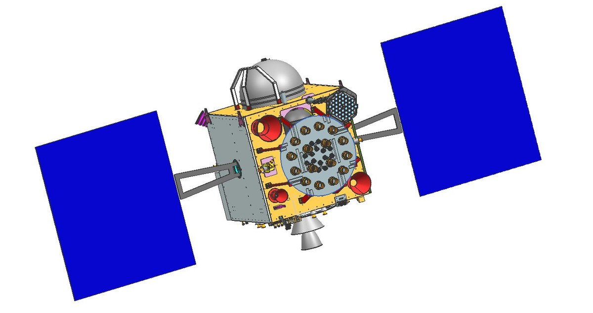
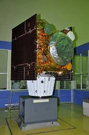
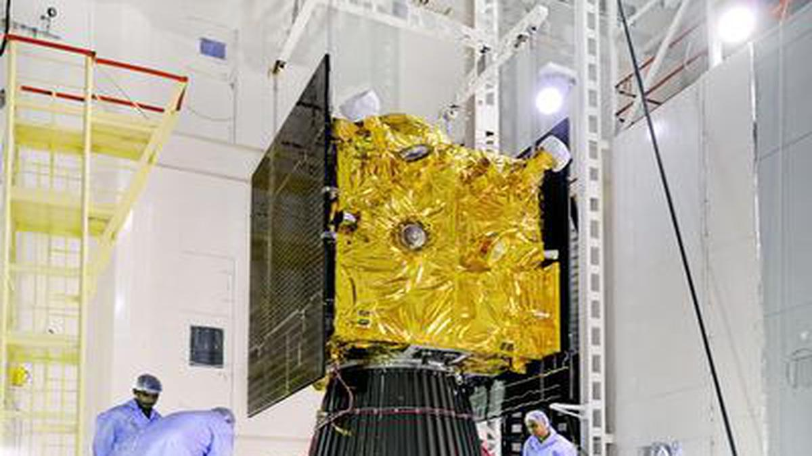
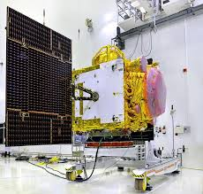

Photos of some NAVIC Satellites



IRNSS-1A
IRNSS-1B
IRNSS-1C
IRNSS-1D
IRNSS-1E
IRNSS-1F
India’s advancements through GSAT and NAVIC exemplify its commitment to leveraging space technology for societal benefits. These programs not only enhance national resilience but also position India as a global leader in space science and satellite technology. With the continued evolution of GSAT and NAVIC, India is poised to extend its influence on the international stage, contributing to global efforts in navigation, communication, and disaster management.